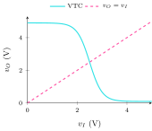

and measure how much noise a chain of gates tolerates; a gain larger than 1 in the transition region restores degraded levels.
and measure how much noise a chain of gates tolerates; a gain larger than 1 in the transition region restores degraded levels.Definitions
 , : output levels for input low/high (driving an identical gate).
, : output levels for input low/high (driving an identical gate).- ,
 : input boundaries where the VTC slope is −1; inputs below are surely "0", above surely "1".
: input boundaries where the VTC slope is −1; inputs below are surely "0", above surely "1". - Switching threshold
 :
:  .
. - Noise margins as above; ideal inverter: ,
 , , .
, , .
Why slope −1
If between and , small disturbances grow there; outside, they are attenuated. Choosing the −1 points maximises the guaranteed margin for a chain of identical gates (regeneration).
Picture

and the unity-gain points define the switching threshold and the noise margins.Worked example
Measured CMOS VTC ( V): slope −1 at V ( V) and V ( V). V, V: asymmetric, because the PMOS is relatively strong. Region check at point V,
V): slope −1 at V ( V) and V ( V). V, V: asymmetric, because the PMOS is relatively strong. Region check at point V,  V (
V ( ): NMOS → triode; PMOS , → saturation.
): NMOS → triode; PMOS , → saturation.
Engineering applications
Logic-family compatibility (TTL vs CMOS levels), signal integrity budgets (crosstalk and ground bounce must stay within NM), level shifters, Schmitt triggers for noisy inputs.
Pitfall
and are not  and 0 in ratioed logic (NMOS, pseudo-NMOS): is set by a current balance and must be computed.
and 0 in ratioed logic (NMOS, pseudo-NMOS): is set by a current balance and must be computed.